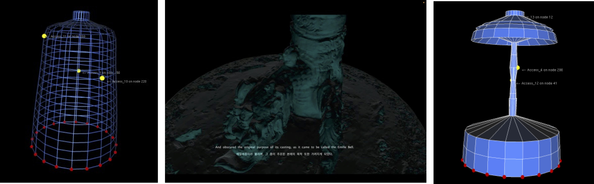
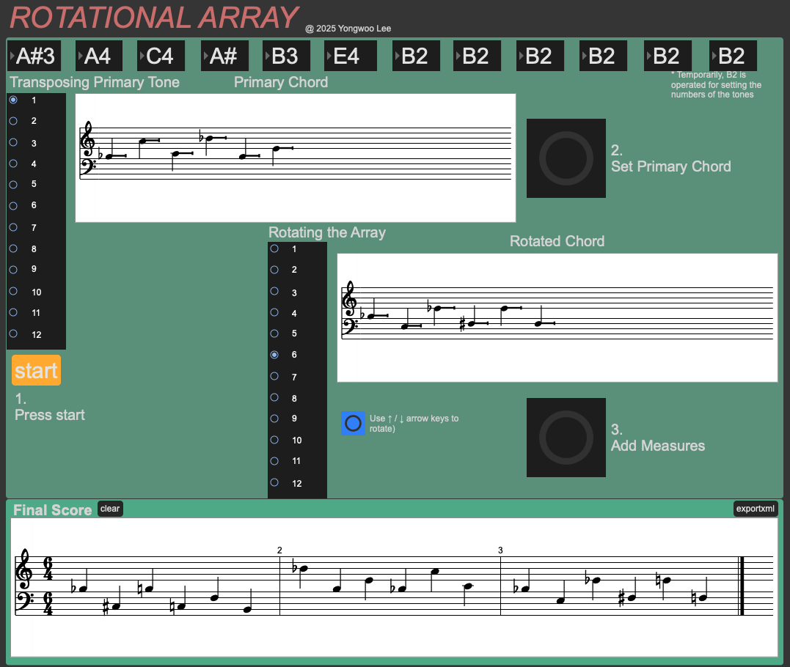
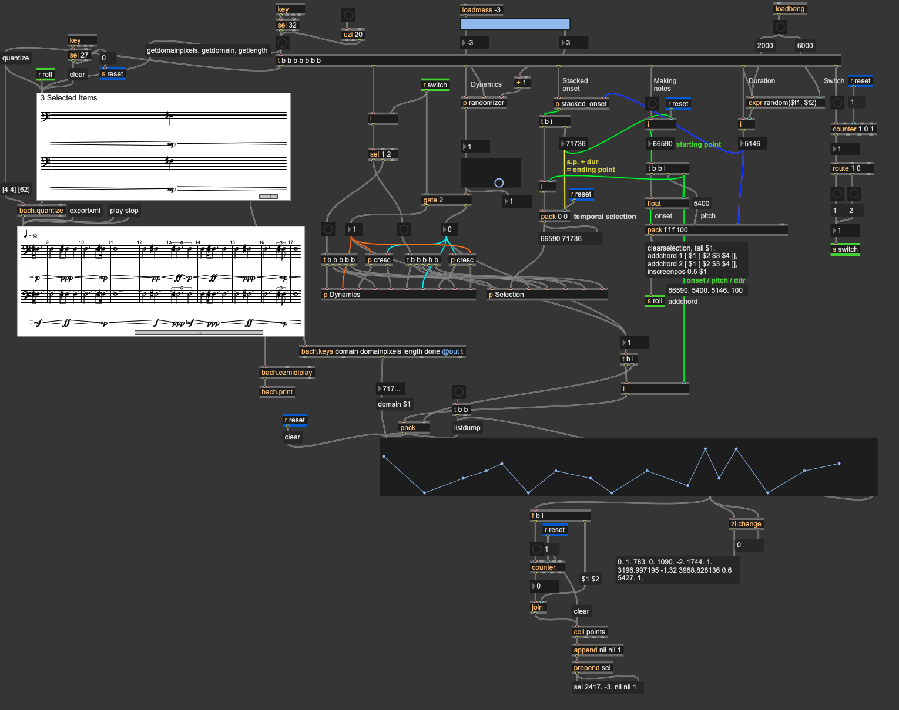

YONGWOO LEE
About

Yongwoo Lee explores new sonic territories across instrumental and electroacoustic music, spanning diverse disciplines with a background in the humanities and a practice in physical modeling and audio programming. His work is shaped by experience at CREAMA (Center for Research in Electro-Acoustic Music and Audio), two years of national service as a firefighter and interdisciplinary research on the translation of humanistic materials into musical language. His works and projects have been presented at international platforms including the International Computer Music Conference (ICMC, 2023/24/26), IRCAM Forum and other international concerts.
Works
Submerged Glitches in Synthetic Field (2026)
By translating digital glitches and synthetic fields into pure acoustic orchestral textures, the work reimagines electronic errors and system collapses through raw, organic sound.
Petals Adrift (2025)
Five instruments intertwine through distinct timbres and techniques, capturing the fleeting movement of drifting petals through pure musical texture.
Colloquy (2024)
Two spatially contrasting pianos and live electronics react in real time to opposing pitch sets, driving a friction-filled dialogue toward a shared resolution around a single pitch.
Physical Modeling Projects

The Emille Bell: Resonance of Absence and the Abyss in Speculative Physical Modeling (2026)
This project reconstructs the sound and physical form of the Sacred Bell of Great King Seongdeok (Emille Bell)—a Korean National Treasure whose physical striking is strictly restricted—using physical modeling techniques. Rather than pursuing a purely faithful acoustic reproduction, this research reframes physical modeling as a medium for speculative inquiry, engaging with the narrative gaps, omissions, and sonic failures embedded within the bell's legend. By manipulating mesh configurations and material properties, the work articulates omitted social structures and contemporary notions of "good sound," offering an alternative audio-visual approach to engaging with non-operational sonic heritage.
Virtuosic Embodiment of a Modalys String through Color Tracking Technology
This project presents a real-time live performance system that manipulates IRCAM Modalys physical modeling synthesis using Max/MSP/Jitter color tracking. By mapping 3D hand gestures to key physical parameters, the system dynamically alters string materials—ranging from horsehair and synthetic fibers to various metals and minerals—while continuously controlling bowing friction, position, and weight for expressive live improvisation.
Permeation
Permeation pairs an acoustic clarinet with a virtual counterpart synthesized through Modalys physical modeling. Dynamic manipulation of pipe parameters and air pressure generates rich wind textures and physical acoustic artifacts. Built through Max/MSP algorithms, the electronic layer closely interlocks with the live soloist, culminating in a seamless synthesis where actual and physical modeling instruments completely permeate one another.
Visual Works
while you are looking at reflections you made (2026)
An interactive audiovisual installation inspired by Albert Camus’s The Myth of Sisyphus. Using photogrammetry, 3D tracking, and Max/MSP, the work transforms viewers' movements into colored light and harmonic sound, continuously reshaping a virtual flower in real time.
where untitled temporal properties are touched (2026)
This work explores the subjective nature and manipulation of time. Utilizing 3D-scanning Brechemin Auditorium—the actual performance site—via photogrammetry, the piece virtualizes the physical space while manipulating live audio spectra and visuals in real time to challenge traditional temporal perception.
Bach lab

Rotational Array Patch
Built on Max/MSP using the bach library, this patch allows users to construct a custom pitch-class set from the 12-tone system, apply transposition and rotation algorithms, and export the final sequence to MusicXML (.mxl) format.

Symmetrical Dynamic Interpolator
Built on Max/MSP using the bach library, this patch generates contrapuntal dynamic structures across two staves using stochastic dynamic mapping. Guided by breakpoint function graphs and randomized onset algorithms, it creates strict dynamic symmetries—such as inverted crescendo and decrescendo profiles (p ↔ f, ppp ↔ fff) between upper and lower systems—and renders the resulting score into bach.roll and notation formats.